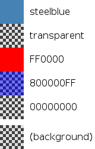

QML Basic Type: color
- By a SVG color name, such as "red", "green" or "lightsteelblue".
- By a hexadecimal triplet or quad in the form "#RRGGBB" and "#AARRGGBB" respectively. For example, the color red corresponds to a triplet of "#FF0000" and a slightly transparent blue to a quad of "#800000FF".
- Using the Qt.rgba(), Qt.hsla(), Qt.darker(), Qt.lighter() or Qt.tint() functions.
Example:

Additionally, a color type has r, g, b and a properties that refer to the red, green, blue and alpha values of the color, respectively:
Text { color: "red" // prints "1 0 0 1" Component.onCompleted: console.log(color.r, color.g, color.b, color.a) }
To test color values for equality, use the Qt.colorEqual() function. This allows colors to be accurately compared whether they are in property form or in any of the acceptable string specification forms.
When integrating with C++, note that any QColor value passed into QML from C++ is automatically converted into a color value, and vice-versa.
This basic type is provided by the QtQuick import.
See also QML Basic Types.